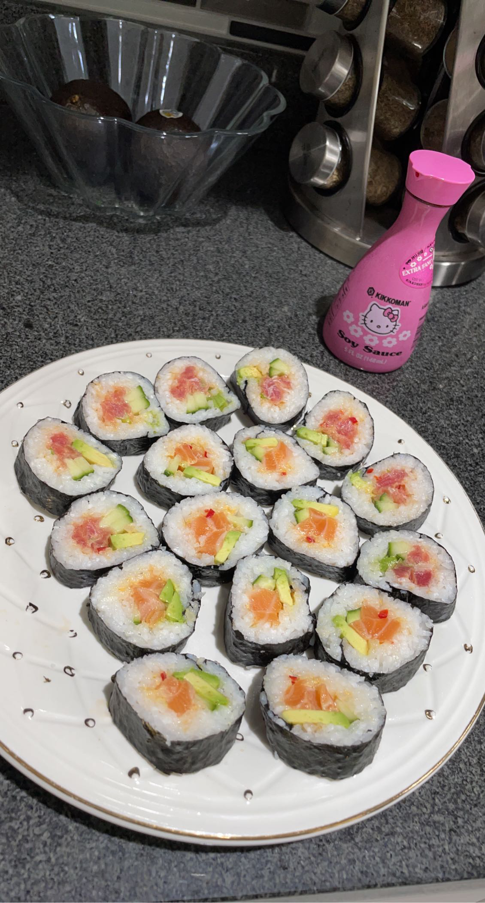
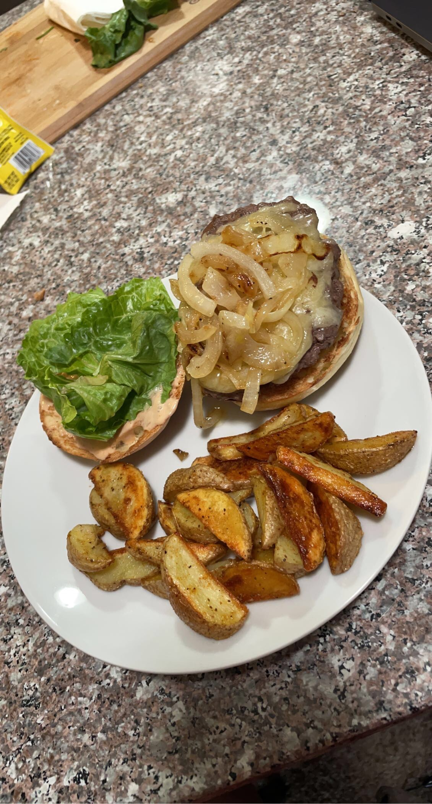
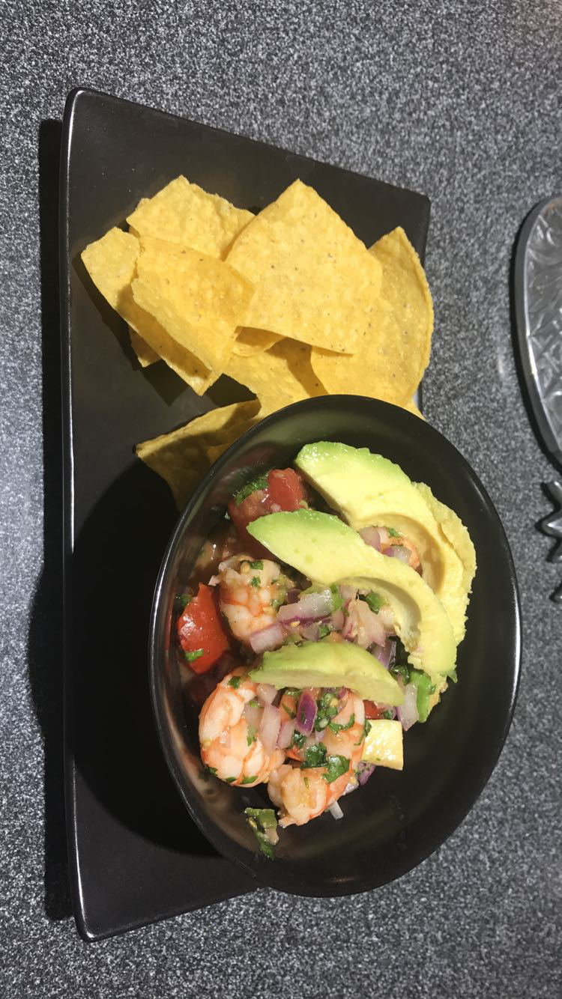
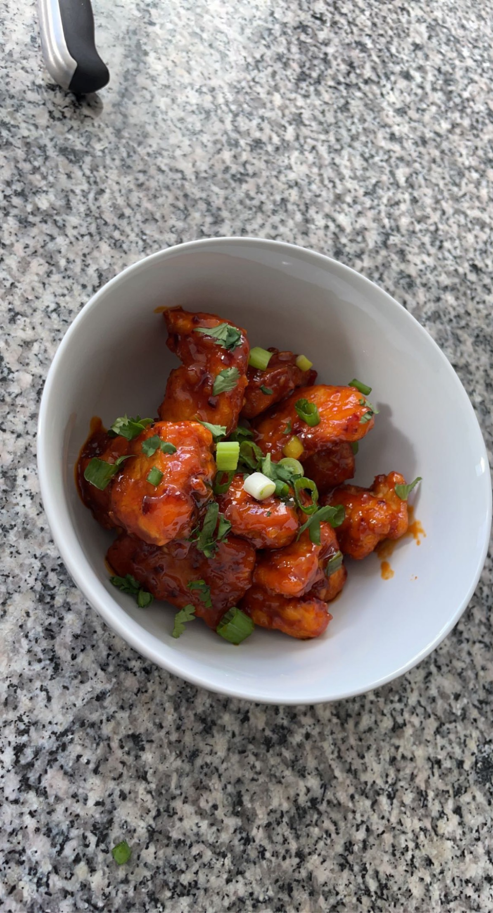
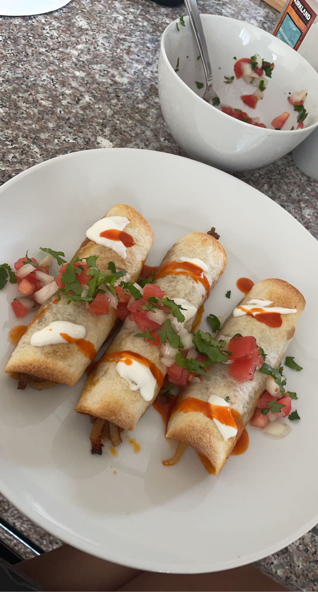
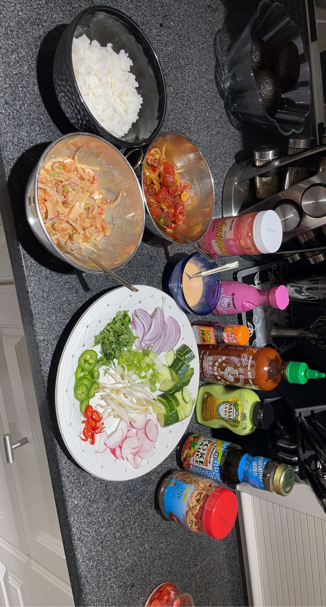
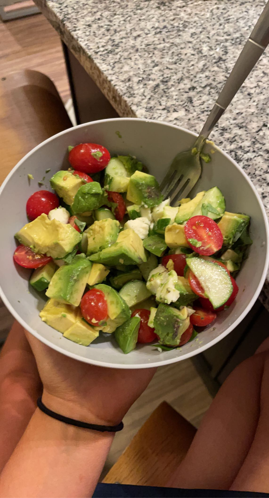
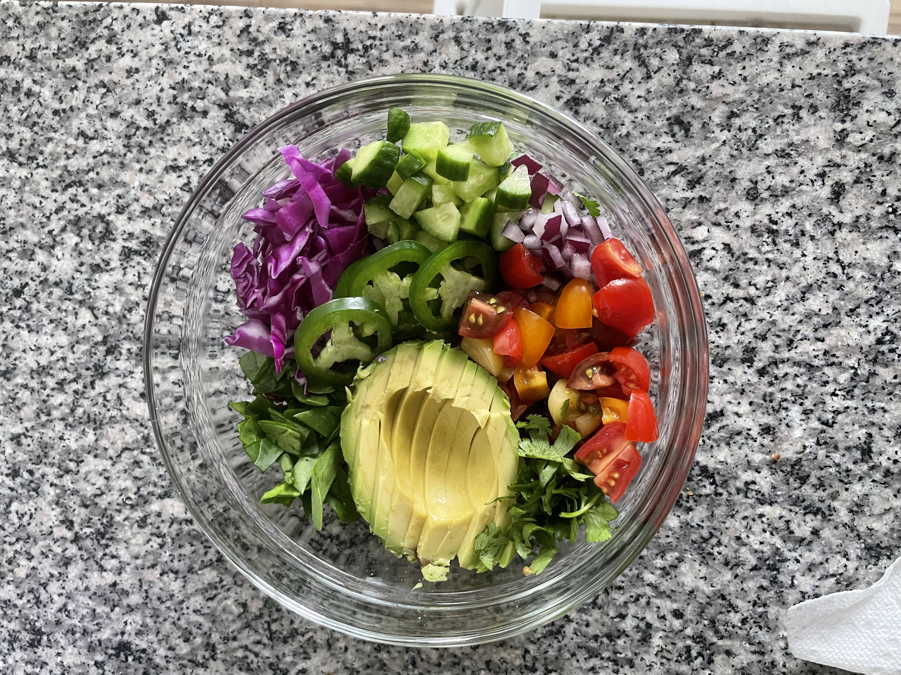
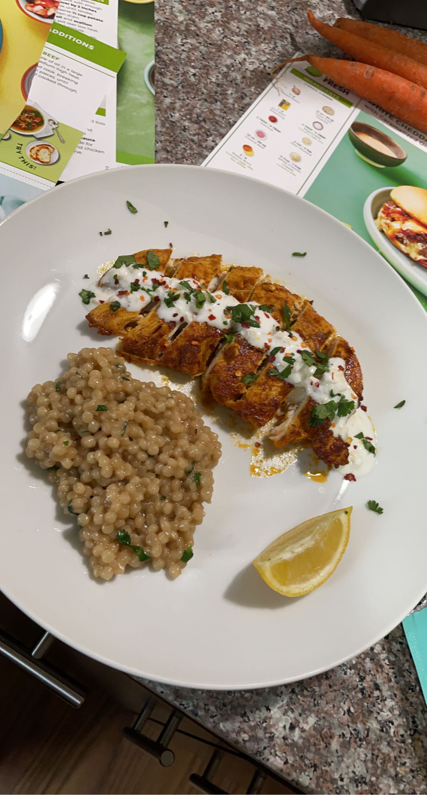
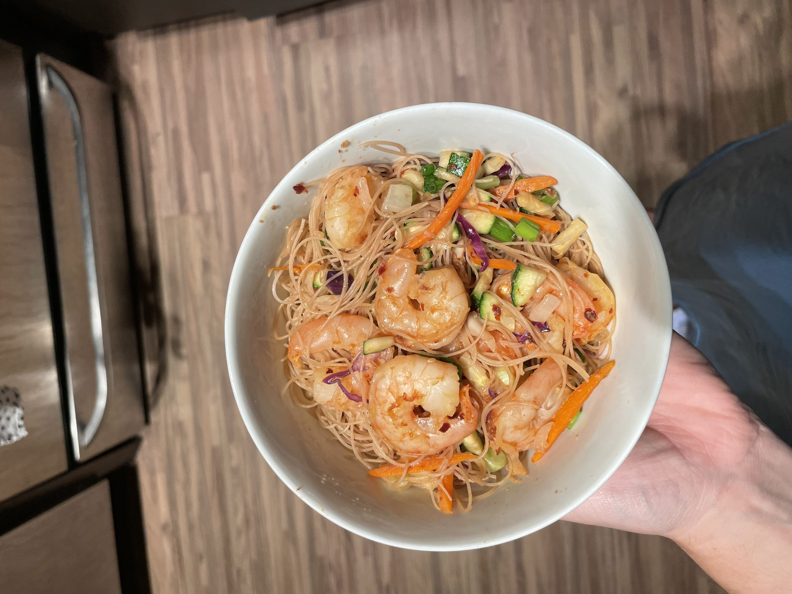

I love to cook but I hardly have the time and when I do have the time I don't have the groceries or access to a car. But here's some stuff I've cooked when I did have the time and groceries. My entire instagram feed is just recipes and people cooking nestled inbetween gameday posts, I like to save the recipes to try them out later and they usually turn out pretty good. I promise I'll be unstoppable once I finally commit to buying an air fryer.
Sushi
This summer I finally made sushi. It's one of those things I said I would do over and over but I finally did last summer. I was pleasanlty surprised by how it turned out. Kind of impressed with myself.
Burger and Potato Wedges
Slight caveat this was a Hello Fresh recipe I followed, which I kind of feel is cheating but it still turned out really good, my roomates can vouch for that.
Shrimp Ceviche
As previosuly mentioned, I love ceviche. So of course I had to make it myself and I was really happy with how it turned out. It's become a staple in our household since my parents love it too.
Bang Bang Chicken
One of my favorite food bloggers posted this recipe for a spicy asian style "bang bang chicken". While I did make an absolute mess of the kitchen frying chicken it turned out SO good. This is where the air fryer would come in handy.
Flautas
Yet another Hello Fresh recipe that turned out delicious. My roomate's mom got us a couple weeks of hello fresh recipes so we were eating really good for a month.
Poke Bowls
I made spicy salmon and tuna poke and set up a little make your own poke bowl for my family. It turned out yummy and nobody got food poisoning despite their mild concerns. I had a little too much fun shopping at H mart for the ingredients for these.
Avocado Caprese Salad
This was super simple to make but so good. Definitely one of my go to lazy yet fairly healthy lunch options.
Quinoa Bowl
In an attempt to make up for eating terribly after finals week, I made this quinoa bowl with pretty much every colorful vegetable I could find in the fridge. Not pictured: the chipotle dressing I made to go with it.
Chicken and Couscous
Yet another Hello Fresh recipe that I really enjoyed. Couscous is one of those things I never even considered buying at the grocery store but I really enjoyed it in this recipe and have bought it since. I think that's honestly the best part of Hello Fresh.
Vermicelli With Shrimp
This is a shrimp vermicelli bowl I made when I was out of groceries and only had frozen shrimp and vermicelli noodles in my pantry It turned into a pretty solid meal.